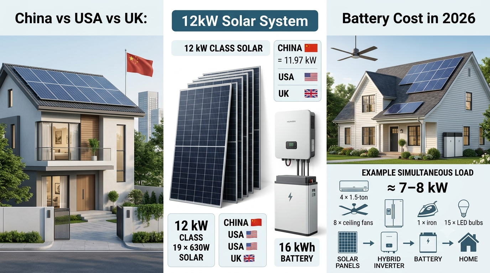

GLOBAL SOLAR PRICES • AUGUST 31, 2026
China vs USA vs UK: How Much Does a 12kW Solar System With a 16kWh Battery Cost in 2026?
Solar system prices can look very different from one country to another. But comparing only panel prices is misleading because a complete residential installation also includes the inverter, battery, mounting structure, cables, protection equipment, electrical work, permits and labor.
This comparison uses one standardized premium system so readers can see how the economics change between major solar markets.

The Standard System Used for This Comparison
To keep the comparison as consistent as possible, the baseline is a 12 kW-class solar system using 19 × 630W Tier-1 solar panels. Nineteen panels produce 11.97 kW DC, which is effectively a 12 kW-class array.
- 19 × 630W Tier-1 solar panels = 11.97 kW DC
- 12 kW hybrid inverter, same/equivalent performance class
- 16 kWh LiFePO4 battery
- Premium aluminum/galvanized mounting structure
- 6 mm² solar DC cable
- Correctly sized AC cabling
- DC and AC distribution/protection boxes
- DC and AC isolators/breakers
- DC and AC surge protection
- String fuses/protection where required
- MC4 connectors and cable management
- Battery protection and BMS
- Changeover/backup switch
- Earthing/grounding and earth electrodes where required
- Monitoring/CT meter interface
- Roof hardware, conduits and waterproof glands
- Transport, installation, testing and commissioning
- Permit/interconnection allowance and normal miscellaneous BOS
Estimated Complete System Cost by Country
The following figures are premium turnkey budgeting ranges for the standardized system, before country-specific incentives. They are market estimates rather than fixed national prices or guaranteed installer quotations.
| Market | Estimated complete system |
|---|---|
| 🇺🇸 USA | $42,000–$55,000 |
| 🇨🇭 Switzerland | $39,000–$52,000 |
| 🇯🇵 Japan | $35,000–$48,000 |
| 🇬🇧 United Kingdom | $34,000–$46,000 |
| 🇩🇪 Germany | $33,000–$45,000 |
| 🇫🇷 France | $31,000–$43,000 |
| 🇦🇺 Australia | $28,000–$40,000 |
| 🇨🇦 Canada | $28,000–$40,000 |
| 🇦🇪 UAE | $25,000–$37,000 |
| 🇨🇳 China | $18,000–$28,000 |
Why the USA Can Be More Expensive
U.S. residential solar pricing can include significant labor, permitting, electrical and soft costs in addition to equipment. The same hardware can therefore produce a very different turnkey price than a factory-direct or low-labor market.
For comparison, recent U.S. marketplace data has placed solar-only residential systems around the mid-$2-per-watt range, while adding a substantial battery, backup equipment and installation can move a complete project much higher.
Why China Can Be Much Cheaper
China has a large domestic solar manufacturing base and a highly developed solar supply chain. Panels, inverters, batteries, mounting components and other balance-of-system equipment can often be sourced closer to manufacturing cost.
However, a lower Chinese equipment or installation price should not automatically be treated as a worldwide delivered price. Export logistics, taxes, certifications, shipping and local installation can change the final cost.
UK, Germany, France and Other Premium Markets
European markets can have higher labor, electrical, VAT, permitting and compliance costs than manufacturing-heavy markets. Equipment pricing can also vary based on local certification and installer margins.
Australia is an important exception to the general high-cost pattern: residential solar has historically benefited from strong competition and a mature installation market. A premium 16 kWh battery and larger 12 kW-class system still increases the total project cost substantially.
Component Cost Matters
| Component | Typical premium budget range across markets |
|---|---|
| 19 × 630W Tier-1 panels | $2,500–$7,000 |
| 12 kW hybrid inverter | $2,000–$6,000 |
| 16 kWh LFP battery | $5,000–$16,000 |
| Mounting structure | $800–$3,500 |
| Cables, DBs, protection and BOS | $800–$3,500 |
| Labor, permits, commissioning and project costs | $3,000–$15,000 |
These ranges overlap because country-specific labor, taxes, certification and installation conditions can dominate the final quote.
What Electrical Items Are Included?
A realistic turnkey comparison should not stop at panels, inverter and battery. The budget should also account for DC cable, AC cable, DC/AC breakers, isolators, surge protection devices, distribution boxes, changeover or backup switching, MC4 connectors, string protection, battery protection, earthing, monitoring, mounting hardware, conduit, cable management, labels, testing and commissioning.
How Much Home Load Can a 12 kW-Class System Handle?
The solar array is 11.97 kW DC, while the baseline inverter is rated at 12 kW AC. Actual available power changes with sunlight, temperature, battery state, inverter limits and household demand.
As an illustrative example, a home might simultaneously use:
| Load | Example quantity | Approx. running load |
|---|---|---|
| 1.5-ton inverter AC | 4 | ~4.8–6.0 kW |
| Ceiling fans | 8 | ~0.5–0.6 kW |
| Refrigerator | 1 | ~0.2 kW running |
| Iron | 1 | ~1.0–1.5 kW |
| LED bulbs | 15 | ~0.15–0.2 kW |
This example is roughly 7–8 kW of simultaneous running load. Actual AC consumption and appliance startup behavior vary by model, temperature and operating conditions.
What Does the 16 kWh Battery Mean?
A 16 kWh battery does not mean the home can automatically run a 16 kW load. Battery continuous output depends on its inverter, battery specifications and protection settings.
As a simple illustration, an average 8 kW load would theoretically consume 16 kWh in about two hours. Real-world runtime will be lower or higher depending on usable capacity, conversion losses, reserve settings and whether the load changes over time.
Which Country Offers the Best Value?
If the goal is the lowest complete installation cost, China is likely to have a major cost advantage because of its domestic manufacturing and supply chain. If the goal is premium equipment, strong installer infrastructure, local warranties and mature consumer protection, higher-cost markets can justify part of the premium.
The cheapest quote is not necessarily the best system. Buyers should compare the equipment model, warranty, production estimate, battery warranty, installer workmanship, monitoring, electrical compliance and total installed cost.
Final Takeaway
A fair international solar comparison should compare the complete system, not just the solar panels.
For our 2026 baseline of 19 × 630W Tier-1 panels, a 12 kW-class hybrid inverter, 16 kWh LFP battery and full BOS/installation package, estimated premium turnkey costs can range from roughly $18,000–$28,000 in China to approximately $42,000–$55,000 in the USA, with the UK and other premium markets falling between those extremes.
These figures are planning estimates. Exchange rates, taxes, labor, roof conditions, local electrical codes, incentives, battery choice and installer pricing can materially change the final quotation.
SolarRateHub Tip: When comparing countries, always ask for a line-item quotation that separates panels, inverter, battery, mounting, electrical protection, labor, permits and other balance-of-system costs.